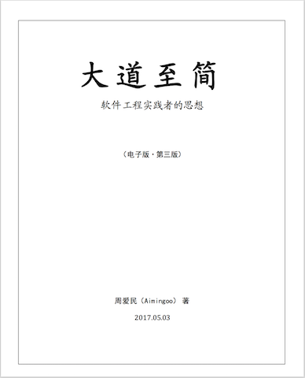

第六版：2017.05.03，电子版（第三版）
在发布《大道至易（第二版）》时为本书重制了电子版。
内容在本书电子版（第二版）的基础上没有更新。
使用markdown重排了全部格式，发布了.epub和.azw3版本，并重制了pdf版本。
关于本电子版
该电子版是采用上一版为底本的，并且没有作文字上的增修。主要是为了发布质量更好的版本而制作的。
从第一版开始，本书的电子版一直都是没有封面的（考虑到效果，在本版本的.PDF上制作了一个简单的封面效果）。
下载
1. 高质量的PDF版本 【下载】
推荐在桌面系统、PAD或大屏幕移动设备上阅读。
2. 适用于Kindle的版本 【下载】
下载后用USB上传到Kindle即可。
如果你使用Amazon的“发送到设备”服务，那么这本书是不显示封面的。并且可能你需要将书的扩展名从.azw3改为.mobi。
上述的修改不影响阅读效果。
3. 使用了SVG图的.epub版本 【下载】
推荐在Macbook、iPhone或iPad中的iBooks软件上阅读。在其它支持“内置SVG图的.epub电子书”的阅读器上也有较好的阅读效果。
4. 一般质量图片的.epub版本 【下载】
一般的掌上阅读软件都可以支持。
5. 低版本Kindle使用的阅读格式
即低版本.mobi文件，阅读体验较差。请移驾我的Github（在这里）获取下载。
历史中的版本
最早发布这本书的电子版是在12年前，在这里：公开《大道至简——软件工程实践者的思想》电子版
2012年发布了它的电子版第二版，在这里：大动作！！！公开《大道至简：软件工程实践者的思想》电子版（第二版）
本书（含纸质版）主要版次共有六版。其中各版本细节，请翻阅电子书末尾的“版本历史”。